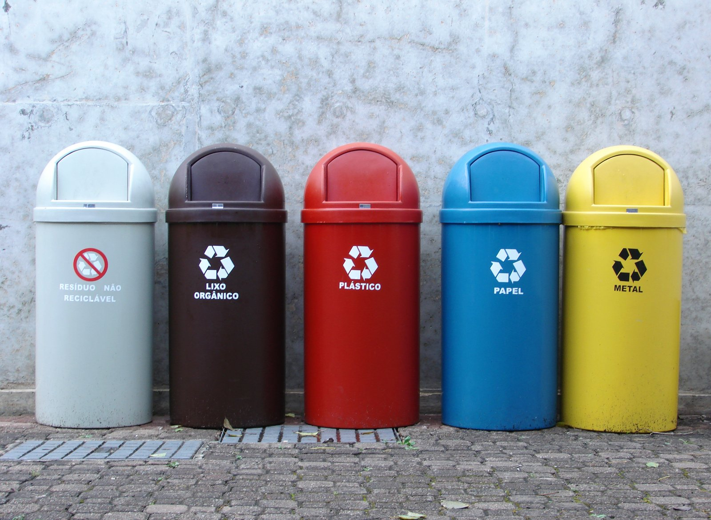

tri sélectif

Comment faire

Les Poubelles

Les autres produits
Trions nos déchets pour ne pas polluer notre environnement. Les éco gestes et les bonnes pratiques permettent de privilégier notre environnement et de préserver notre santé. Consommer malin contribuent aussi à la protection de notre planète.